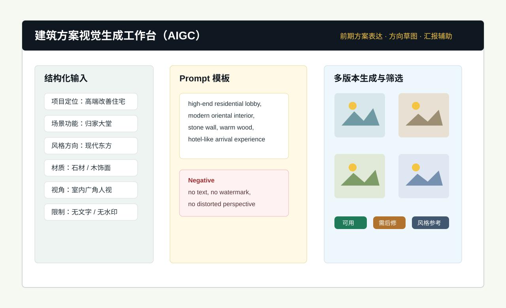
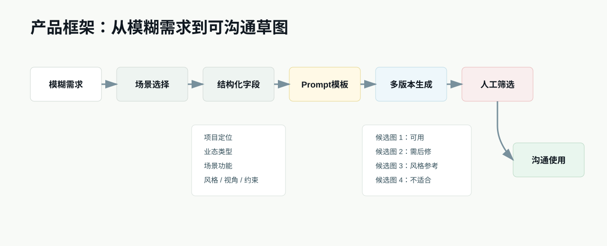
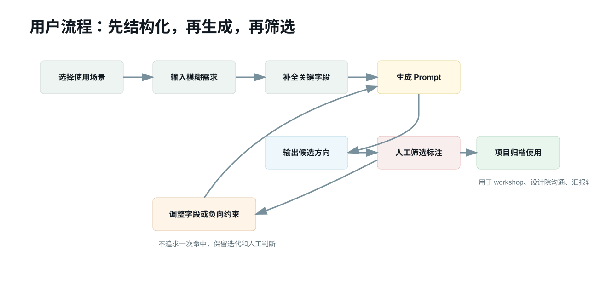
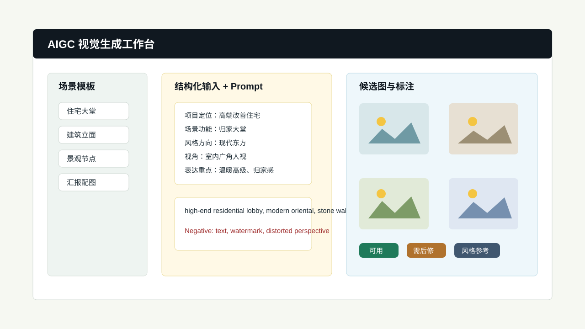
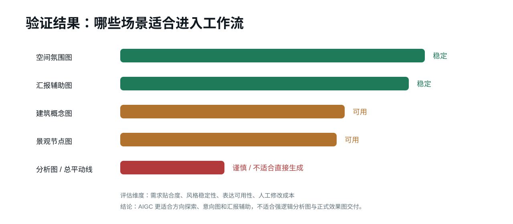

workshop 沟通图可能需要 1-2 天准备，讨论节奏被出图资源拖慢。
Project Case · AIGC Workflow
建筑方案视觉生成工作台（AIGC）
面向前期方案表达、意向图探索和汇报配图的 AI 生成工作流原型。核心不是替代设计师，而是把模糊需求结构化，快速生成可沟通、可比选的方向草图。

Problem
前期方案沟通需要图，但正式出图链路太重
在建筑地产方案评审、设计院沟通和内部 workshop 中，团队经常需要“不是最终成果，但必须够具体”的视觉材料。AIGC 的机会在于先降低早期沟通成本。
高级、温暖、改善型这类词难以统一理解，跨团队认知容易偏差。
非 AI 专业同事不会稳定写 Prompt，导致生成准确率因人而异。
AI 图不能直接当正式设计成果，必须保留人工判断和用途标注。
Positioning
参考建筑学长，但只做更小的 MVP 切口
建筑学长这类商业化产品证明建筑垂直 AI 绘图需求成立。本项目不包装成完整竞品，只聚焦前期方案表达中的模糊需求结构化和方向草图生成。
| 对比项 | 建筑学长 | 本项目 |
|---|---|---|
| 产品成熟度 | 已上线商业产品 | 自主 MVP 原型与作品集项目 |
| 用户范围 | 建筑师、室内设计师、景观设计师、学生等 | 建筑地产产品/设计协同角色 |
| 场景范围 | 建筑、室内、景观、规划、资源、插件、课程 | 前期方案表达、workshop、设计院沟通、汇报辅助 |
| 输出目标 | 更接近设计效果图和渲染工具 | 方向草图、意向图、汇报辅助图 |
Framework
产品框架：把模糊需求转成可生成指令
产品重点不是让用户学习复杂 Prompt，而是把建筑地产高频场景封装成字段和模板。

Workflow
用户流程：先结构化，再生成，再筛选
前期方案表达的目标是方向探索，不是一次生成定稿。多版本候选和人工筛选比单图命中更符合真实工作方式。

Prototype
页面原型：工作台而不是单次出图工具
页面结构包含场景模板、结构化输入、Prompt 预览、候选图筛选和结果归档。这样才能从工具演示变成可复用工作流。

Demo
从模糊需求到可沟通候选图
这个 demo 展示产品要解决的关键问题：用户不用自己写完整 Prompt，只需要按业务字段补充信息，系统把字段组装为生成指令，并输出多个候选方向供人工筛选。
结构化输入
Prompt模板
多版本生成
人工筛选
当前场景：住宅入口方向图
住宅入口方向图
TOD 汇报封面
社区商业氛围图
把“高端、温暖、有归家感”的模糊描述拆成项目类型、风格、用途、视角和表达重点，用于 workshop 和设计院沟通。
项目类型高端改善住宅
风格方向现代东方
使用场景设计院沟通
画面视角入口人视
表达重点归家仪式感、温暖灯光、品质界面
生成指令预览
高端改善住宅入口，现代东方建筑风格，石材立面，温暖灯光，酒店式归家体验，入口人视视角，真实尺度，精致住宅品质感。
负向约束：不要文字、不要水印、不要夸张造型、不要畸形透视、不要不真实比例。
方向 A可用
入口气质接近，可放入 workshop 草稿。
方向 B需后修
灯光氛围可用，立面比例需要调整。
方向 C风格参考
材质和色调可参考，构图不稳定。
结果判断基本可用
使用边界适合方向探索和氛围沟通，不适合直接作为正式效果图交付。
Structured Input
结构化输入字段
字段设计的原则是少而关键，每个字段都要影响生成结果，避免让非专业用户面对过多参数。
| 字段 | 说明 | 示例 | 是否必填 |
|---|---|---|---|
| 项目定位 | 产品或客群定位 | 高端改善住宅 | 是 |
| 业态类型 | 住宅、商业、TOD、商办等 | 住宅 | 是 |
| 场景功能 | 具体空间或画面任务 | 归家大堂、入口景观 | 是 |
| 风格方向 | 建筑或空间风格 | 现代东方、现代简约 | 是 |
| 材质倾向 | 主要视觉元素 | 石材、木饰面、金属 | 否 |
| 画面视角 | 人视、街角、鸟瞰、室内广角 | 室内广角人视 | 是 |
| 表达重点 | 核心氛围或沟通目标 | 归家仪式感、生活氛围 | 是 |
| 限制条件 | 不希望出现的内容 | 无文字、无水印、不要畸形比例 | 是 |
Prompt Template
Prompt 模板与负向约束
模板不是让用户背 Prompt，而是把高频场景的拆解经验沉淀成产品能力。
住宅大堂模板
high-end residential lobby, modern oriental interior design, stone wall, warm wood veneer, soft ambient lighting, hotel-like arrival experience, warm and elegant atmosphere, wide angle eye-level view
Negative Prompt
text, watermark, shopping mall style, excessive luxury, distorted perspective, unrealistic proportions, blurry, low quality
Trial
真实试用反馈：不是商业化，但有业务语境
项目曾给前万科产品设计部同事试用，场景包括正式项目内部讨论、workshop 沟通、设计院方向沟通和汇报文件方案草图准备。
| 试用内容 | 用途 | 反馈 | 产品化启发 |
|---|---|---|---|
| 室内场景效果图 | 大堂、架空层、公区氛围方向 | 有草图后讨论更具体 | 适合前期空间氛围表达 |
| 立面效果图 | 建筑风格、材质、线条参考 | 给设计院的指令更明确 | 需要限制夸张造型和比例错误 |
| 景观效果图 | 入口、园林节点、社区生活场景 | 生活氛围表达比较稳定 | 适合景观节点和生活方式图 |
| 汇报方案草图 | workshop、汇报页、内部沟通 | 原本 1-2 天的沟通图可更快生成初稿 | 可作为汇报辅助，不是正式成果 |
Validation
验证结果：13 个场景达到基本可用及以上
评估维度包括需求贴合度、风格稳定性、表达可用性和人工修改成本。结论是 AIGC 更适合方向探索、意向图和汇报辅助，不适合强逻辑分析图与正式效果图交付。

Evaluation Table
15 个场景验证记录
| 编号 | 场景类型 | 示例场景 | 需求贴合度 | 风格稳定性 | 表达可用性 | 结果判断 |
|---|---|---|---|---|---|---|
| V1 | 建筑概念图 | 高端住宅现代东方概念图 | 高 | 中 | 高 | 可用 |
| V2 | 建筑概念图 | TOD 综合体城市界面概念图 | 中 | 中 | 中 | 基本可用 |
| V3 | 建筑概念图 | 商办项目立面风格意向图 | 高 | 中 | 高 | 可用 |
| V4 | 分析图 | 总平关系与功能分区分析图 | 低 | 中 | 低 | 一般 |
| V5 | 分析图 | 动线与景观节点分析图 | 低 | 中 | 低 | 一般 |
| V6 | 分析图 | 客群定位与场景匹配分析图 | 中 | 中 | 中 | 基本可用 |
| V7 | 效果意向图 | 住宅入口大堂意向图 | 高 | 高 | 高 | 表现稳定 |
| V8 | 效果意向图 | 社区架空层生活方式意向图 | 高 | 高 | 高 | 表现稳定 |
| V9 | 效果意向图 | 商业街区夜景意向图 | 高 | 中 | 高 | 可用 |
| V10 | 效果意向图 | 园林节点景观意向图 | 高 | 中 | 高 | 可用 |
| V11 | 汇报辅助表达 | 产品定位汇报封面辅助图 | 高 | 高 | 高 | 表现稳定 |
| V12 | 汇报辅助表达 | 方案背景页城市意向配图 | 高 | 高 | 高 | 表现稳定 |
| V13 | 汇报辅助表达 | 竞品分析页风格对比图 | 中 | 中 | 中 | 基本可用 |
| V14 | 汇报辅助表达 | 主打客群生活方式配图 | 高 | 高 | 高 | 表现稳定 |
| V15 | 汇报辅助表达 | 产品线研究结论页辅助视觉 | 中 | 中 | 中 | 可用 |
Decision
关键取舍
普通业务同事不应被要求成为 Prompt 专家，产品应把拆解能力封装进字段和模板。
前期表达本来就是看方向和做比选，多个候选方向比单图命中更符合真实流程。
AI 负责初稿和探索，人工负责判断是否符合定位、是否可对外沟通、是否有设计风险。
Roadmap
后续路线
v0
场景验证
完成 15 个样例场景和人工评估。
v1
结构化输入
建立字段体系和高频场景模板。
v2
Prompt 模板库
封装大堂、立面、景观、汇报配图模板。
v3
多版本筛选
加入候选图标注、归档和复盘。
v4
参考图输入与局部重绘
支持上传参考图、草图，以及局部材质和景观调整。